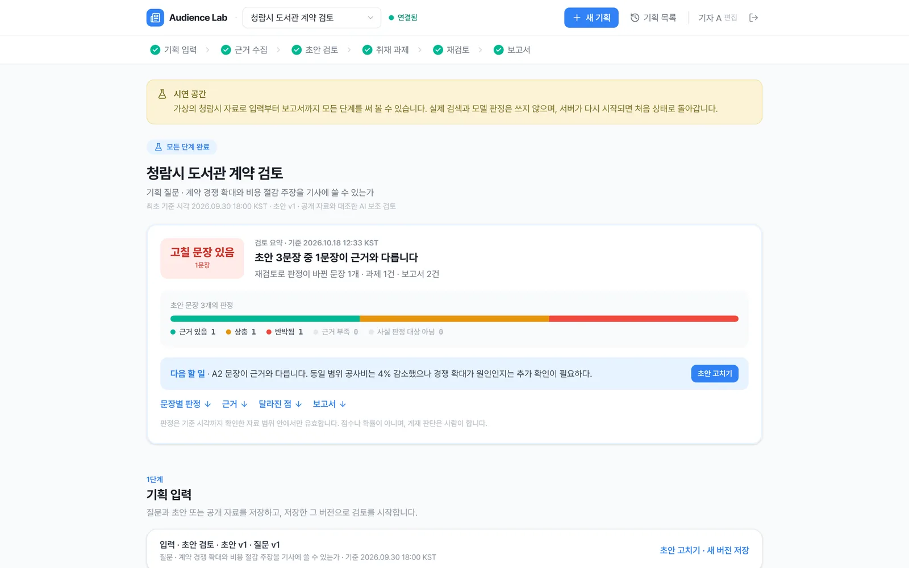
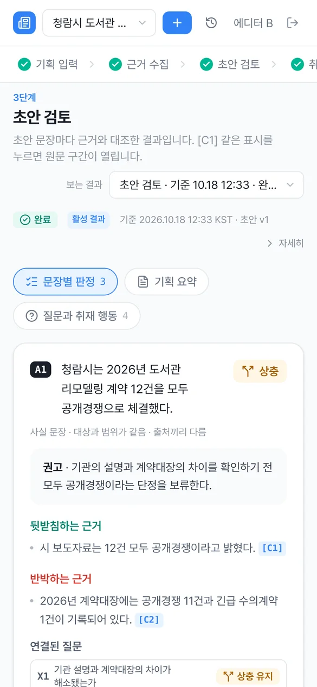

편집국 기획 검토 도구
기사로 쓰기 전에,
문장마다 근거를 붙입니다
Audience Lab은 기획과 초안의 문장을 정부·지자체 공개 자료와 하나씩 대조하고,
아직 모르는 것은 취재 과제로 넘깁니다. 게재 판단은 사람이 합니다.
가입 없이 시연 계정으로 들어갑니다. 시연 공간은 가상의 청람시 자료로 동작합니다.
기사를 쓰기 전의 확인은,
대부분 마감 직전 기억에 기대어 합니다
보도자료의 숫자는 그대로 기사가 되기 쉽고, 기관의 설명과 실제 기록이 다를 때 누가 어느 원문으로 확인했는지는 남지 않습니다.
확인하지 못한 인과와 공백은 회의에서 말로만 오가다 기사에는 단정만 남기 쉽습니다.
보도자료의 숫자가 그대로 기사가 됩니다
기관의 설명과 계약대장의 기록이 다를 때, 어느 쪽을 확인했는지가 기사 밖에 남지 않습니다.
"12건 모두 공개경쟁" ↔ 계약대장: 공개경쟁 11건, 긴급 수의계약 1건
범위가 다른 숫자끼리 비교합니다
가구비가 섞인 합계와 공사비만의 금액을 비교하면, 같은 사실에서도 결론이 달라집니다.
합계 15억 → 12억: 20% 감소 · 같은 범위 12.5억 → 12억: 4% 감소
확인한 기록이 흩어집니다
누가, 어느 원문의 어느 문장으로, 언제까지의 자료를 보고 판단했는지가 메신저와 메모에 흩어집니다.
기준 시각과 원문 버전이 없으면 같은 확인을 다시 해야 합니다
더 취재할 것이 사라집니다
근거가 없는 인과와 아직 모르는 것이 과제로 남지 않아, 다음 취재로 이어지지 않습니다.
"경쟁 확대 덕분에" — 인과 근거는 아직 없음
Audience Lab은 기사로 쓰기 전에 문장마다 근거와 원문 구간을 붙여, 기자와 데스크가 같은 근거를 보고 판단하게 합니다.
판정만이 아니라, 왜 그렇게
판정했는지 원문까지 보여 줍니다
초안을 넣으면 문장별 판정과 근거, 서로 다른 설명, 아직 모르는 것, 다음 취재가 한 화면에 정리됩니다. 질문만 넣어도, 확보한 공개 원문만 넣어도 됩니다.
문장별 판정과 권고
초안을 문장으로 나눠 사실·인과·의견을 가르고, 문장마다 판정과 고칠 점, 필요한 근거를 붙입니다.
원문 구간까지 추적
판정 → 근거 진술 → 원문 구간 → 원문 버전 → 출처로 이어집니다. 모델이 인용한 문장은 서버가 원문에서 다시 찾습니다.
같은 범위로 다시 계산
증감률은 서버가 원 단위 정수로 다시 계산합니다. 범위가 다른 금액은 비교에서 빼고, 그 이유를 함께 보여 줍니다.
서로 다른 것과 아직 모르는 것
출처끼리 다른 설명은 어느 쪽이 맞는지 정하지 않고 상충으로 남기고, 공백에는 왜 중요한지와 필요한 자료를 붙입니다.
취재 과제와 재검토
판정에서 바로 과제를 만들고, 확보한 원문으로 다시 검토해 무엇이 왜 바뀌었는지 이전 결과와 비교합니다.
고정된 보고서
검토 결과를 기준 시각과 입력 버전에 고정해 PDF·DOCX·JSON으로 받습니다. 받을 때 크기와 SHA-256을 한 번 더 맞춰 봅니다.
한 기획이 한 화면에서,
입력부터 보고서까지 이어집니다
화면 위의 단계 표시를 따라 위에서 아래로 읽으면 됩니다. 맨 위 요약 카드가 지금 상태와 다음 할 일을 먼저 알려 줍니다. 아래 화면은 실제 서비스의 시연 공간에서 찍었습니다.

검토 요약 · 지금 상태와 판정 분포, 다음 할 일을 먼저 보여 줍니다
기획 입력부터 보고서까지,
여섯 단계
각 단계의 결과는 화면에 고정되고, 다음 단계로 넘길지는 사람이 정합니다. 이전 결과는 지워지지 않고 그때의 판정 그대로 다시 열 수 있습니다.
기획 입력
기획 질문과 초안(또는 확보한 공개 원문), 기준 시각을 넣습니다. 입력은 버전으로 남습니다.
기자 · PD · 작가근거 수집
go.kr · korea.kr · kosis.kr에서 자료를 찾고 서버가 원문을 직접 받아 저장합니다. 원문에서 인용한 문장만 근거가 됩니다.
자동 · 서버 검증초안 검토
문장마다 판정과 권고, 필요한 근거를 냅니다. 수치는 다시 계산하고, 판정이 근거 목록과 맞지 않으면 저장하지 않습니다.
자동 · 서버 검증취재 과제
더 확인할 문장과 상충, 공백을 과제로 넘기고 담당자를 정합니다. 과제를 끝낸 것과 질문이 풀린 것은 따로 봅니다.
기자 · 데스크재검토
확보한 원문을 취재 결과로 묶어 다시 검토하고, 이전 검토와 무엇이 왜 바뀌었는지 비교합니다.
기자 · 데스크보고서
고른 검토와 기준 시각에 고정한 보고서를 PDF·DOCX·JSON으로 받아 공유합니다.
데스크시작할 때 넣는 것
모델의 말을 그대로
근거로 쓰지 않습니다
모델(OpenAI GPT 계열)은 인용할 문장을 고르고 상충·공백과 판정을 제안합니다.
근거가 되는지는 서버가 규칙으로 다시 확인하고, 맞지 않으면 저장하지 않습니다.
인용 다시 찾기
모델이 인용한 문장을 서버가 원문에서 다시 찾습니다. 찾지 못하면 근거로 쓰지 않고, 금액은 그 구간에 실제로 적힌 것만 남깁니다.
계산 다시 하기
증감률은 원 단위 정수로 다시 계산하고, 상위 질문의 상태는 하위 질문에서 서버가 다시 셉니다.
독립 출처 세기
같은 계열 출처의 재게시는 독립 확인으로 세지 않습니다. 재게시나 검색 누락만으로 상충이나 해소를 만들지 않습니다.
권리와 기준 시각
권리가 확인되지 않은 자료는 제목과 주소만 남기고 근거에서 뺍니다. 기준 시각 이후에 받은 자료는 그 검토에 넣지 않습니다.
Audience Lab의
차이
빠른 결론보다
확인할 수 있는 근거를 남깁니다
Audience Lab은 기사를 대신 판단하는 서비스가 아닙니다. 판정마다 근거 진술과 원문 구간, 기준 시각과 입력 버전을 붙여, 기자와 데스크가 같은 근거를 열어 보고 직접 판단하도록 설계했습니다.
독자 반응은 예측하지 않습니다. 받을 수 있는 반론의 틀은 보여 주되, 근거를 다르게 읽는 방식에 대한 합성 해석이며 사실이 아니라고 화면과 보고서에 표시합니다. 정렬 점수는 무엇을 먼저 볼지 정하는 순서일 뿐 확률이 아닙니다.
기존 방식과의 역할 비교
Audience Lab은 마지막 확인을 대신하기보다, 기획·초안 단계에서 확인할 것을 좁히고 근거와 과제를 정리하는 도구를 지향합니다.
| 항목 | AI 챗봇에 묻기 | 수작업 확인 | Audience Lab |
|---|---|---|---|
| 확인 방식 | 질문 · 답변 | 담당자가 자료를 찾아 대조 | 문장마다 공개 자료와 대조, 서버가 다시 확인 |
| 근거 제시 | 출처가 불분명하거나 요약 | 담당자 메모 | 판정마다 원문 구간 · 버전 · 출처 |
| 숫자 비교 | 모델이 계산 | 사람이 계산 | 서버가 같은 범위로 다시 계산 |
| 기록 | 대화에 흩어짐 | 남기기 어려움 | 기준 시각에 고정된 검토 이력과 보고서 |
| 활용 단계 | 아이디어 탐색 | 게재 전 최종 확인 | 기획 · 초안 단계의 점검과 취재 과제 정리 |
| 한계 | 근거 확인과 재현이 어려움 | 시간과 인력 | 공개 자료 밖의 사실은 사람이 취재 |
중요한 기사의 최종 확인과 게재 판단은 기자와 데스크가 직접 합니다.
기획을 쓰는 사람과 받는 사람이
같은 근거를 봅니다
한 번 쓰고 끝나는 확인이 아니라, 기획이 오가는 모든 지점에서 쓰는 상시 검토 도구입니다.
기자 — 넘기기 전 점검
데스크에 넘기기 전에 문장별로 근거를 점검하고, 숫자 문장의 비교 범위와 계산을 확인합니다.
데스크 — 판단과 배정
근거·상충·공백을 한 화면에서 보고, 남은 질문을 취재 과제로 배정하고 진행을 확인합니다.
PD · 작가 — 기획 단계 정리
초안 없이 질문만으로 쟁점과 사실관계를 정리하고, 섭외·인터뷰 전에 확인할 질문을 확보합니다.
검증 담당 — 기록 남기기
어떤 원문으로 어디까지 확인했는지를 기준 시각에 고정한 보고서로 남겨, 같은 확인을 되풀이하지 않습니다.
판정을 단정하기보다
판단 범위를 분명히 합니다
판정은 기준 시각까지 확인한 자료 범위 안에서만 유효합니다. 근거 있음은 게재 승인이 아니며, 일반적인 사실 확정도 아닙니다.
| 참고할 수 있는 것 | 사람이 직접 판단할 것 |
|---|---|
| 공개 자료와 초안 문장의 일치 여부 | 게재 여부와 표현 수위 |
| 출처끼리 다른 설명(상충) | 어느 쪽 설명이 맞는지 |
| 같은 범위로 다시 계산한 수치 | 인과 관계가 성립하는지 |
| 아직 모르는 것과 필요한 자료 | 취재원 접촉과 비공개 자료 확인 |
| 받을 수 있는 반론의 틀(합성 해석) | 독자 · 시청자의 실제 반응 |
로그인 화면에서 시연 계정을 고르면
바로 시작합니다
시연 공간은 편집국 공간과 분리되어 있고, 가상의 청람시 자료로 입력부터 보고서까지 모든 단계를 써 볼 수 있습니다. 실제 검색과 모델 판정은 쓰지 않습니다.
무료 서버에서 동작해, 한동안 접속이 없었다면 처음 여는 데 1분쯤 걸릴 수 있습니다. 시연 공간은 서버가 다시 시작될 때마다 처음 상태로 돌아갑니다. 화면 속 기관 · 문서 · 금액은 시연용 가상 자료입니다.

도입 방식
시연으로 흐름을 확인하고, 실제 기획 한두 건으로 파일럿을 시작합니다. 필요한 공개 자료와 계정 구성부터 함께 맞춥니다.
시연
- 시연 계정 3개 (편집 · 편집 · 열람)
- 가상의 청람시 자료로 여섯 단계 전부
- 실제 검색과 모델 호출 없음
편집국 파일럿
- 관리자가 구성원 계정 발급 · 권한 관리
- 정부 · 지자체 공개 자료 검색과 원문 대조
- PDF · DOCX · JSON 보고서
운영
- 기획 · 보고서를 남기는 저장 공간
- 모델 선택과 하루 호출 한도 조정
- 허용 도메인과 사용량 확인
모델 사용료는 연결한 OpenAI 계정에 사용한 만큼 청구됩니다. 하루 호출 한도는 관리자가 정합니다.
자주 묻는 질문
어떤 자료를 찾아 대조하나요?
판정을 그대로 믿어도 되나요?
AI는 어디까지 하고, 무엇을 서버가 직접 확인하나요?
입력한 초안은 어디로 가나요?
독자나 시청자의 반응도 알려 주나요?
계정과 권한은 어떻게 나뉘나요?
준비 중인 기획,
쓰기 전에 먼저 대조해 보세요
소속과 검토하고 싶은 기획의 종류를 알려 주시면, 어떤 공개 자료가 필요한지부터 함께 맞춰 파일럿 범위와 진행 방법을 안내해 드립니다.